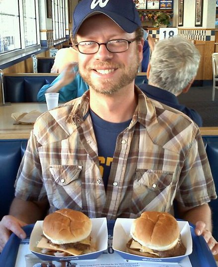

About Me

Greetings! My name is John P. Geipel, a full stack web developer from Milwaukee, Wisconsin.
My specialties include HTML, CSS, Layout, Illustration, Signmaking and Typography.
Recently, I have also added Cheesemonger to my resume and hope to someday aquire my Certified Cheese Professional certification.
In my free time, I enjoy drawing, nerding out to design blogs, podcasts and enjoying tasty beers at Burnheart's Bar.